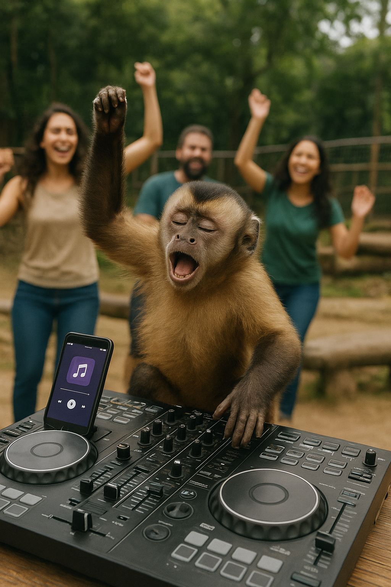
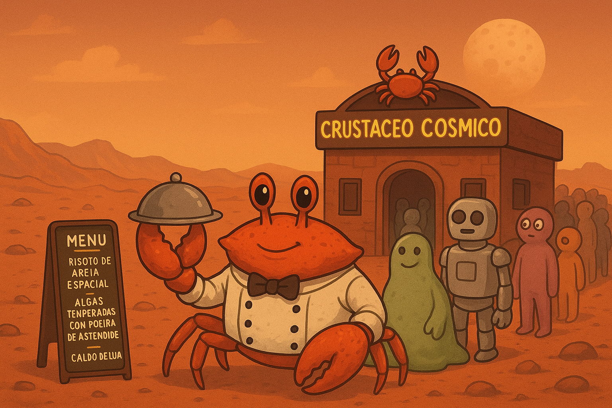
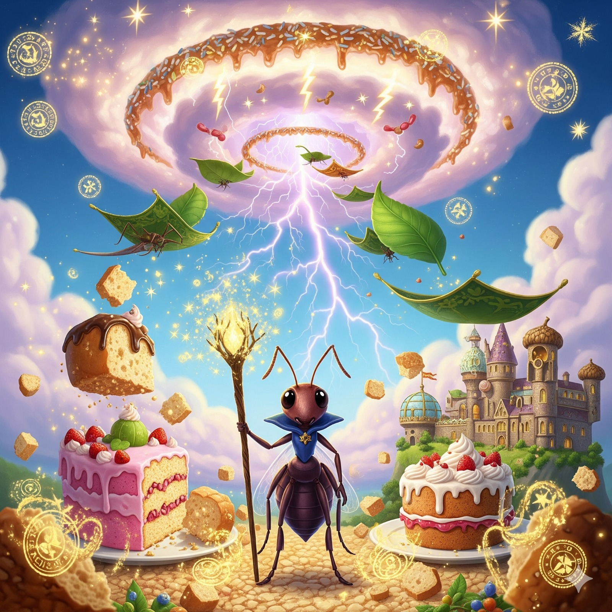
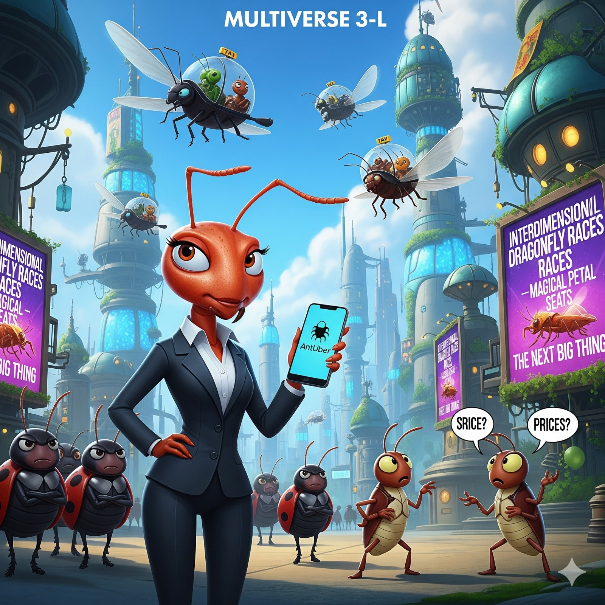
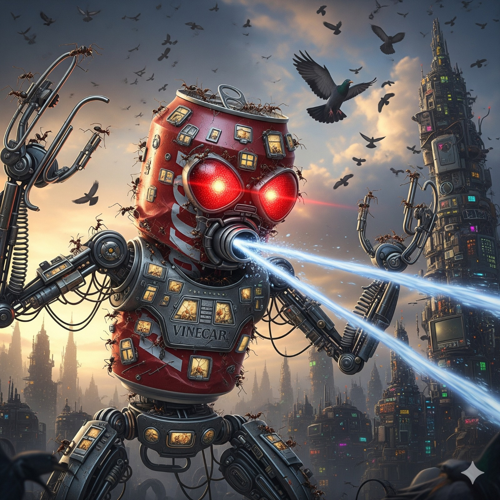
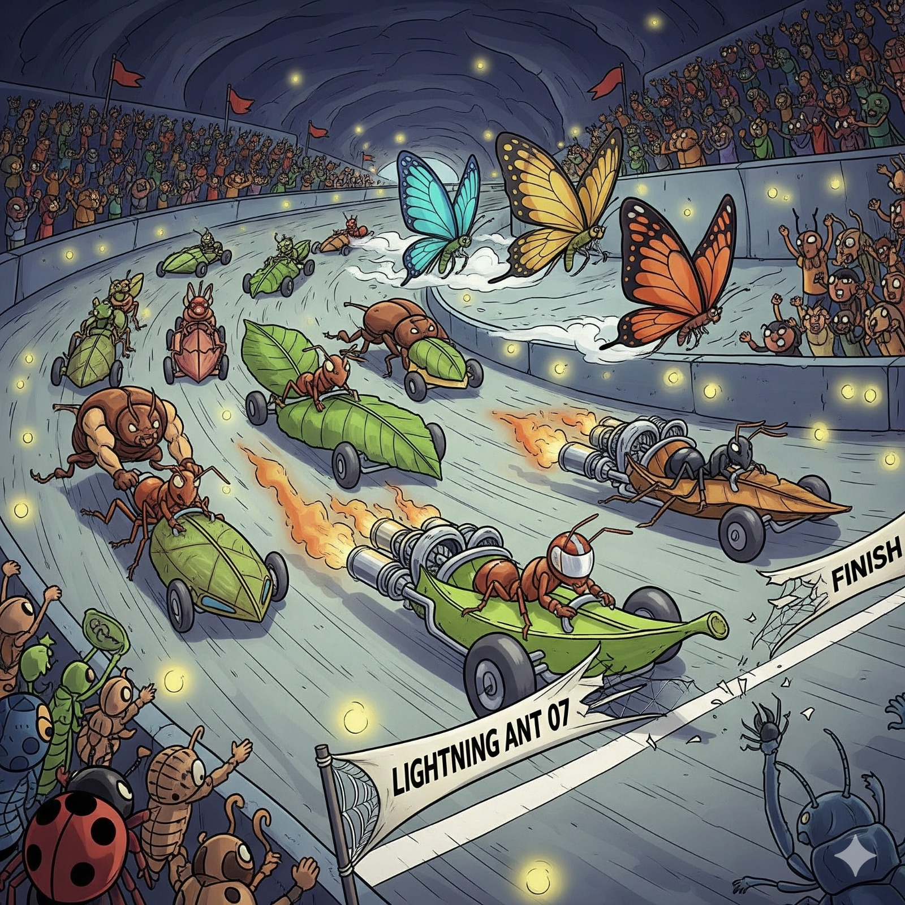

Patos causam engarrafamento aquático em lago da cidade.
Na manhã desta quinta-feira, um grupo de patos protagonizou uma cena curiosa no Lago Azul, no centro da cidade.
Segundo moradores, cerca de vinte aves se reuniram em fila, nadando lado a lado como se estivessem em um desfile
organizado.
O momento chamou a atenção de quem passava pelo local, rendendo fotos e risadas. “Parecia que tinham marcado um
encontro e estavam todos indo para o mesmo lugar”, contou a dona de casa Maria Lopes, que alimenta os patos
diariamente.
Especialistas explicam que o comportamento pode ter sido uma estratégia de deslocamento para encontrar alimento.
Mas, para quem assistiu, foi apenas mais um capítulo encantador da vida tranquila — e levemente caótica — dos
patos da cidade.

Capivaras Criam Seu Próprio Mundo Paralelo
No coração das margens de rios e parques, as capivaras revelaram algo surpreendente: elas vivem em um
verdadeiro mundo paralelo.
Com ruas de barro transformadas em avenidas, reuniões à beira d’água e até sistemas de “democracia da
mordiscada”, esses roedores gigantes parecem ter organizado uma sociedade secreta.
Segundo observadores, cada família de capivaras tem papéis bem definidos: os vigias que alertam com assobios,
os nadadores que cuidam das rotas fluviais e até os “embaixadores” que recebem visitantes humanos com olhares
curiosos e silenciosos.
No seu universo discreto, não existe pressa, apenas convivência pacífica e banhos de sol coletivos. Muitos
especialistas já dizem: se um dia os humanos desaparecerem, o Império Capivara pode muito bem assumir a Terra.
🐾🌎

🐒 Macaco vira DJ em zoológico
Um macaco capuchinho aprontou todas no zoológico de São Paulo! Ele conseguiu pegar o celular de um visitante
distraído, desbloqueou a tela e abriu o aplicativo de música. Em segundos, o som começou a tocar alto e o
macaquinho começou a se balançar como se fosse o DJ da festa. A cena chamou tanta atenção que os visitantes
começaram a dançar junto. Segundo os tratadores, esse macaco já tinha fama de “artista da bagunça”.

🐢 Tartaruga vence corrida contra foguete espacial
No Multiverso 99-Z, engenheiros humanos se preparavam para lançar um foguete interdimensional rumo a Andrômeda.
Tudo estava cronometrado: contagem regressiva, motores aquecidos, imprensa reunida. Mas, no meio da plataforma,
uma tartaruga tranquila atravessava o caminho.
Quando os motores do foguete finalmente dispararam, a tartaruga simplesmente desapareceu em um clarão de
energia e, inexplicavelmente, apareceu primeiro no planeta de destino. O foguete só chegou semanas depois.
Cientistas acreditam que o casco do animal seja, na verdade, um artefato cósmico com propriedades de dobra
espacial. Já a tartaruga, quando questionada, apenas piscou devagar e continuou andando, como se nada tivesse
acontecido. Desde então, ela foi apelidada de Turbo-Tartaruga Quântica, e seu nome entrou para o livro dos
recordes interdimensionais.

🦀 Caranguejo abre restaurante gourmet em Marte
Em uma realidade alternativa, um caranguejo comum da praia de Copacabana desapareceu misteriosamente em uma
onda gigante. Meses depois, ele reapareceu em Marte, onde abriu o primeiro restaurante gourmet interplanetário:
o Crustáceo Cósmico.
O cardápio é um espetáculo: risoto de areia espacial, algas temperadas com poeira de asteroide e o famoso
“Caldo de Lua”, servido em crateras de miniatura. O restaurante já foi avaliado por críticos de gastronomia
intergaláctica, recebendo cinco estrelas estelares no Guia Michelin Quântico.
Clientes de diferentes espécies — de alienígenas gelatinosos a robôs famintos — fazem fila para provar os
pratos. Segundo rumores, até Elon Musk reservou mesa, mas foi recusado porque não tinha caranguejo-points
suficientes.

🌌 Últimas do Multiverso das Formigas
🛰️ Formigueiro lança satélite de açúcar em órbita
Continue Lendo...

📰 Formigas elegem primeira presidente em mundo paralelo
🛰️ Formigueiro lança satélite de açúcar em órbita
Continue Lendo...

🧙 Formiga descobre magia e vira feiticeira
No Multiverso 51-W, uma jovem formiga tropeçou em um grão de areia encantado e ganhou poderes místicos. Agora ela conjura feitiços para transformar migalhas em bolos inteiros. Boatos dizem que ela será convidada para dar aulas em Hogwarts Paralelo.
Continue Lendo...

🐜💼 Formiga abre startup de transporte
No Multiverso 3-L, uma formiga empreendedora fundou a “AntUber”, um serviço de carona em besouros voadores. O aplicativo já é um sucesso, mas os grilos reclamam do preço das corridas noturnas.
Continue Lendo...

🎶 Formigas criam banda de rock subterrânea
No Multiverso 44-R, um grupo de formigas cansou do barulho das cigarras e montou a primeira banda de rock formigueiro. O hit do momento é “Highway to Formigueiro”. Os shows acontecem dentro de raízes ocas e estão lotando de cupins pagantes.
Continue Lendo...

🦾 Formigas constroem robô gigante para enfrentar pássaros
No Multiverso 105-M, a ameaça constante de pássaros predadores levou as formigas a criarem uma solução radical: um robô gigante feito de sucata humana.
Continue Lendo...

🏎️ Formigas criam campeonato interdimensional de corrida de folhas
No Multiverso 66-R, o esporte mais popular não é futebol nem corrida de cavalos: é a Corrida de Folhas Turbo.
Continue Lendo...
